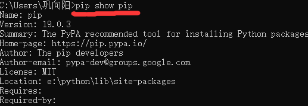
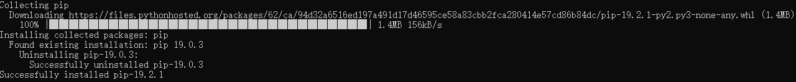
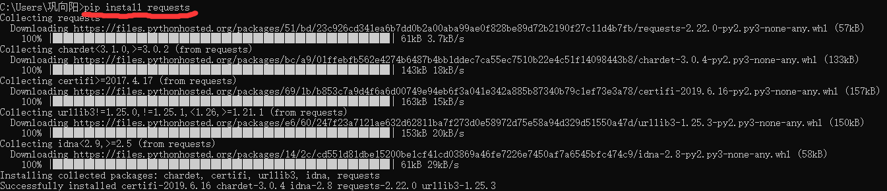
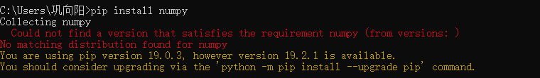
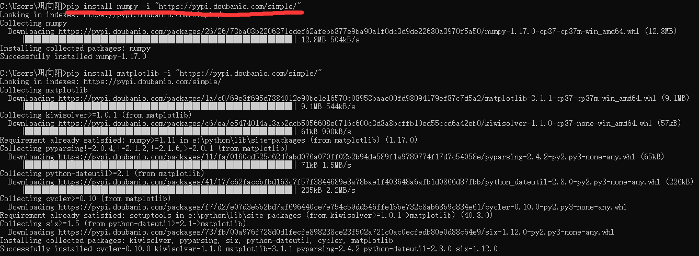

首先第一步 打开命令提示符 输入pip show pip 查看当前pip版本

然后可以上官网搜索一下当前最新的pip版本是多少 如果版本不是最新的
可以使用命令提示符 python -m pip install --upgrade pip

可以看到我的pip版本成功更新到了 19.2.1
之后我们使用pip install requests 试一试能不能直接导入第三方库

可以看到安装成功了

这个时候我们就需要使用镜像安装
一般常用的镜像安装源网站有
（1）阿里云 http://mirrors.aliyun.com/pypi/simple/
（2）豆瓣http://pypi.douban.com/simple/
（3）清华大学 https://pypi.tuna.tsinghua.edu.cn/simple/
（4）中国科学技术大学 http://pypi.mirrors.ustc.edu.cn/simple/
（5）华中科技大学http://pypi.hustunique.com/
个人比较推荐使用豆瓣的镜像源 主要是方便
接下来我们使用pip 豆瓣的镜像源来安装 numpy
命令提示符为 : pip install numpy -i "https://pypi.doubanio.com/simple/"

可以看到安装成功
为了方便大家以后安装别的pip镜像源,举几个例子
如果是要安装 response 镜像源
那么命令提示符为:pip install response -i "https://pypi.doubanio.com/simple/"
即为:在 pip install numpy-i "https://pypi.doubanio.com/simple/"
将之前的numpy修改为你需要安装的镜像源就可以了
当然如果都不成功,也有可能是你的网络问题了.
2019/8/7 本人原创,仅供学习之用